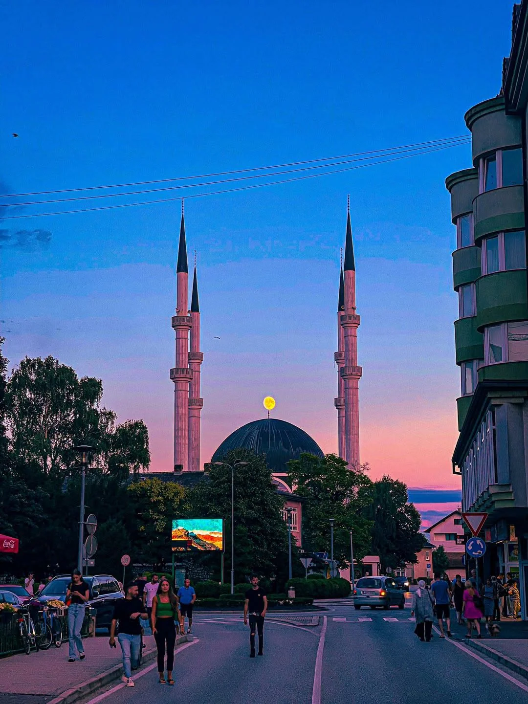
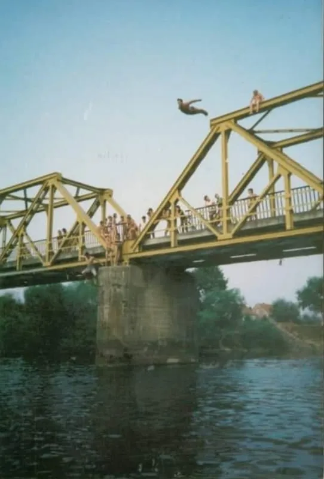
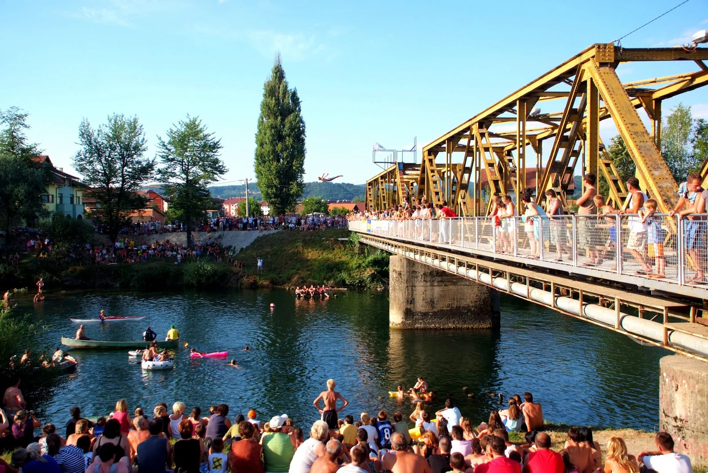

Banja
Sanska Ilidža
Oko 13 km uzvodno, u podnožju Muleža: termalni bazeni, ljekovito blato i smještaj. Radno vrijeme provjerite prije polaska.
Posjeta
Udaljenosti, praktične napomene i prijedlozi ruta za Sanski Most i okolinu.
Udaljenosti
Udaljenosti su približne. Do prašume na Grmeču ima oko 17 km zračne linije od centra grada.
Dolazak
Vrijeme vožnje je približno i ovisi o putu i granici.
Praktično
Kada ići
Ljeto
Ljeti grad višestruko naraste: kući dolaze Sanjani iz dijaspore, a s njima i turisti. Uveče je korzo u Prijedorskoj ulici pun ljudi.
Održava se od 1997. Počinje u julu Sladoledijadom za djecu u Malom parku na Zdeni, a završava krajem jula ili početkom augusta tradicionalnim skokovima s Gradskog mosta. Između su koncerti, izložbe i sport. Organizator je RTV „Sana“.
Ljeti se kupa u Sani, na plažama u gradu i oko njega. Građani su 2026. izglasali uređenje plaža Gerzovo i Radinovac.
Vodama Sane i njenih pritoka gazduje Društvo sportskih ribolovaca „Sana“, osnovano 1950. Dozvolu i pravila tražite kod društva.
Sana je mirnija od Une, pa je spuštanje kajakom pogodno i za početnike.




Smještaj
U centru su hoteli Cat Deluxe i Centar. Ostalo su apartmani, sobe i kuće za odmor u domaćinstvima, u gradu i uz Sanu.
Za jul i august rezervišite ranije: tada je u gradu najviše ljudi.
Banja
Oko 13 km uzvodno, u podnožju Muleža: termalni bazeni, ljekovito blato i smještaj. Radno vrijeme provjerite prije polaska.
Turistička zajednica Sanski Most · Prijedorska 5 · 061 355 120
Prijedlozi
Provjerite uvjete prije polaska.